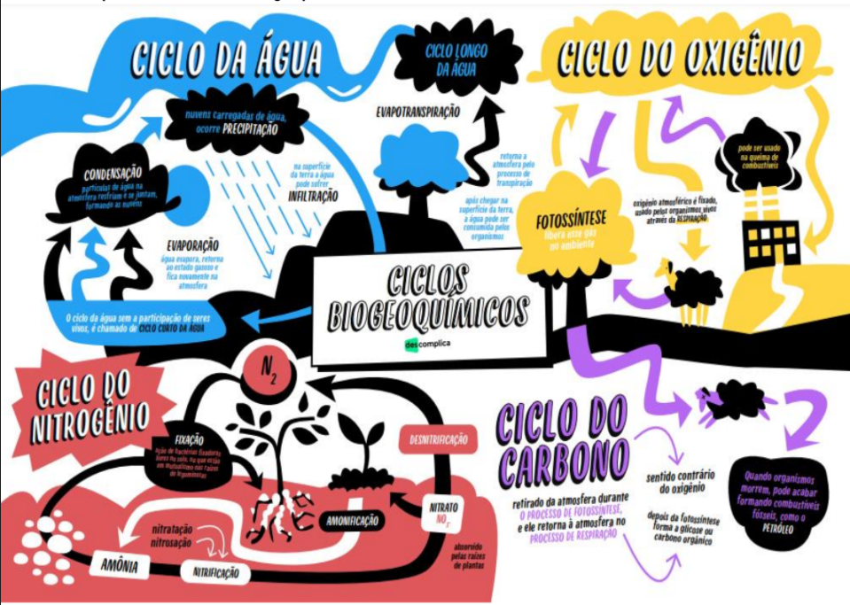

resumo dos ciclos
ciclos carbono: circula na atmosfera, e os processos principais e a fotossintese
ciclos de nitrogenio: o nitrogenio move a atmosfera, os oceanos, a terra e os organismo vivos
ciclo do fosforo: o fosforo circula entre as rochas, o solo, e o organismo, ao contrario do carbono e do nitrogenio
ciclos do enxofre: o enxofre circula atraves da atmosfera, do solo e dos organismos e4sta presente em formas como sulfetode hidrogenio.
ciclo da agua: agua se move atraves da evaporaçao, condensaçao,precipitaçao,infiltraçao no solo

como funciona os biogeoquimicos
Uma característica fundamental dos ciclos biogeoquímicos é o fato dos componentes bióticos e abióticos estarem intimamente relacionados.
Os elementos químicos são retirados do ambiente, utilizados pelos organismos e novamente devolvidos à natureza. A vida está continuamente sendo recriada a partir dos mesmos átomos.
Quando um organismo morre, sua matéria orgânica é degradada pelos seres decompositores, representados por fungos e bactérias. Assim, os átomos que constituíam esse organismo retornam ao ambiente e podem ser novamente incorporados por outros seres vivos para produção de suas substâncias orgânicas.
Sem essa reciclagem, os átomos de alguns elementos químicos fundamentais para a vida poderiam desaparecer.
classificaçao dos ciclos
Os ciclos biogeoquímicos podem ser classificados em dois tipos básicos, conforme a natureza de seu reservatório abiótico:
Ciclo Gasoso: Possuem como reservatório a atmosfera.
Ciclo Sedimentar: Possuem como reservatório as crosta terrestre.
Os elementos necessários à vida participam dos ciclos biogeoquímicos. São eles: a água, o carbono, o oxigênio, o nitrogênio e o fósforo.